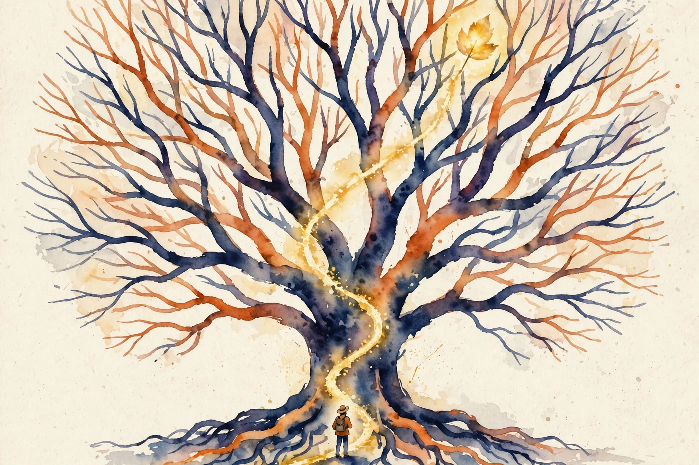
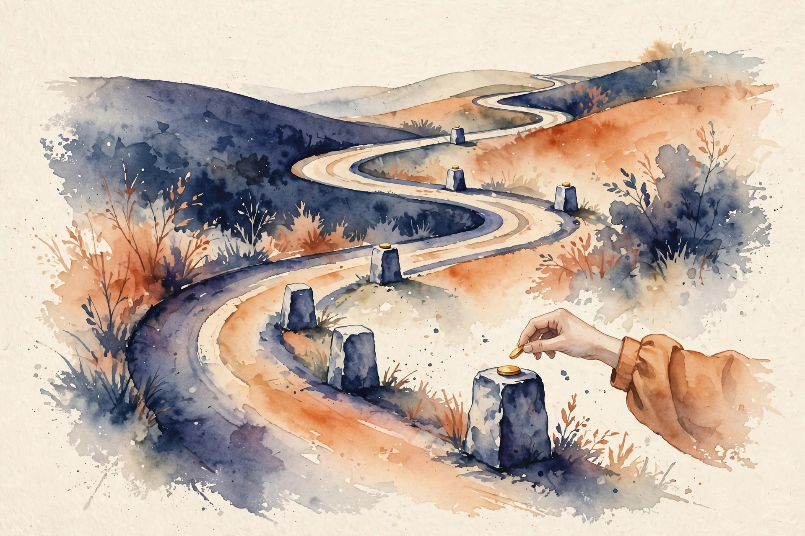

Narrated from the lesson document
Planning, search, and train-time RL
Plans are paths down a tree, and training is search over traces. This companion walks the full arc of Unit 03: from tree search and adaptive branching to credit assignment, synthetic traces, STaR, reasoning RL, and the validity audit that keeps the reward honest.
From the lesson The idea, and every number beside it, comes from the cited section of u03_planning_search.md. The phrasing is the companion’s.
Illustration Invented by the companion: an analogy, a toy with made-up values, or a what-if. Never lecture content.
companion Companion voice: the idea above the tag is from the lesson. The generalization below it is the companion’s.
Provenance: no full lecture transcript exists for sessions 5 and 6. This page narrates the lesson document content/v2/cs329a/lessons/u03_planning_search.md, not a video. Paper titles come from the official schedule through the lesson. The builder did not inspect paper contents. Toy numbers are the lesson’s own computed values, re-plotted here with section citations. Claim class: SOURCE ATTRIBUTION PENDING on paper pointers. Toys are computed and traceable.

A plan is a path down a tree
From the lessonC01 §3
A plan is a path down a tree. The root is now. Each branch is an action. The leaves are futures. Search walks the tree and remembers the best leaf it saw.
From the lessonC01 §2, §6
The toy: 3 actions at each step for 2 steps. Plans (leaves): 3^2 = 9. Nodes total: 1 + 3 + 9 = 13. At b = 3, d = 3: leaves 27, nodes 1 + 3 + 9 + 27 = 40.
From the lessonC01 §6, §9 Move the sliders. The toy counts leaves and nodes for your branching factor and depth.
From the lessonC01 §6, §9
BFS explores level by level and finds the shallowest solution first. DFS dives deep and uses less memory. BFS holds the frontier, up to b^d nodes. DFS holds one path, d + 1 nodes. The exponential is the whole story: d = 10, b = 5 gives 9,765,625 leaves.
Spend branches where the doubt is
From the lessonC02 §3
Spend branches where the doubt is. A node that is already decided gets one child: keep going. A node with real uncertainty gets many children: look around. The tree grows where it is confused.
From the lessonC02 §2, §6
The toy at depth 2. Root uncertain: 6 children. Of the 6, 2 show promise (2 children each), 4 are settled (1 child each). Leaves: 2 × 2 + 4 × 1 = 8. Fixed b = 4: 16 leaves. Same depth, half the leaves.
| Node class | Children | Leaves below |
|---|---|---|
| Root, uncertain | 6 | - |
| 2 promising | 2 each | 4 |
| 4 settled | 1 each | 4 |
| Adaptive total | - | 8 |
| Fixed b = 4 | - | 16 |
Cut the elephant into steaks
From the lessonC03 §3
Cut the elephant into steaks. Each steak cooks separately. The recipe says how the steaks combine into a meal. The interfaces are the recipe.
From the lessonC03 §2, §6
The toy: a weekend trip. Subtasks: transport, lodging, food. Interfaces: dates flow to all three, budget splits across them, the combiner checks total cost against budget.
| Approach | Leaves | Extra cost |
|---|---|---|
| Direct: b = 5, d = 4 | 625 | 0 |
| Decomposed: 3 subtasks × 9 | 27 | combiner 3 |
| Total decomposed | 30 | - |
From the lessonC03 §5
ADaPT’s as-needed point: decompose only when the direct attempt fails, so easy tasks pay no decomposition cost. The mechanism is conditional complexity: pay for structure only where needed.
The critical path sets the floor
From the lessonC04 §3
Independent work runs side by side. Dependent work waits its turn. The planner’s job is to know which is which. Interleaving means: start executing A while still planning C.
From the lessonC04 §2, §6
The toy: three subtasks take 4, 6, and 5 seconds. A and B are independent. C needs A. Serial: 15 seconds. Parallel: A and B together take max(4, 6) = 6, then C takes 5. Total: 11. The critical path A → C is 9. No schedule beats 9.
Credit is blame in reverse

From the lessonC05 §3
Credit is blame in reverse. To find who deserves it, remove each suspect and watch the outcome. The step whose removal breaks success owns the credit.
From the lessonC05 §2, §6
The toy: a three-step trajectory earns reward 1 at the end. Ablation results: remove s1 → reward 0, remove s2 → reward 1, remove s3 → reward 0. Credit: s1 and s3 are necessary, s2 is not. With numbers: baseline success rate 0.4. With s1 forced good: 0.9. With s2 forced good: 0.45. With s3 forced good: 0.85.
| Step | Forced-good rate | Marginal credit | Share |
|---|---|---|---|
| s1 | 0.9 | 0.5 | 0.5 |
| s2 | 0.45 | 0.05 | 0.05 |
| s3 | 0.85 | 0.45 | 0.45 |
The model dreams up attempts
From the lessonC06 §3
The model dreams up attempts. A filter keeps the good dreams. Training on good dreams makes more good dreams. The filter is the teacher, the generator is the student who also writes the textbook.
From the lessonC06 §2, §6
The toy: generate 1000 traces. Filter: keep traces where the final answer is right and every tool call succeeded. Base success rate 0.2 → keep 200 → train to 0.35. Round 2: generate 1000 at 0.35, keep 350, train to 0.45.
| Round | Rate | Kept of 1000 | New rate |
|---|---|---|---|
| 1 | 0.20 | 200 | 0.35 |
| 2 | 0.35 | 350 | 0.45 |
Keep the scratch work that worked

From the lessonC07 §3
Keep the scratch work that led to right answers. Study it. The model teaches itself to show work that works. Each round’s good scratch becomes the next round’s textbook.
From the lessonC07 §2, §6
The toy: 100 questions. The model answers 30 right. For each right answer, keep the rationale it generated. Fine-tune on the 30 triples. Next round: 45 right. Round 3: 55 keepers.
Pay for results
From the lessonC08 §3
Let the model try, and pay for results. The reward is a vending machine: right answer in, gradient out. Discovery beats imitation when the good traces are ones nobody wrote down.
From the lessonC08 §2, §6
The toy: reward = 1 if the final answer is right, 0 otherwise. Policy samples 4 traces per question, gets rewards [1, 0, 0, 1]. Mean = 0.5. Advantages: [0.5, −0.5, −0.5, 0.5]. The update raises the two winners and lowers the two losers.
From the lessonC08 §6 Enter four rewards. The toy applies the lesson’s group-mean baseline.
From the lessonC08 §6
Contrast with STaR: STaR trains on the two winners only. RL also pushes away from the losers.
Grade on a curve within each group
From the lessonC09 §3
Grade on a curve within each group. The best response in the group gets pushed up, the worst gets pushed down, the middle stays. No separate value network: the group is its own baseline.
From the lessonC09 §2, §6
The toy: G = 4 responses to one prompt, rewards [2, 0, 1, 1]. Mean = 1.0. Variance = (1 + 1 + 0 + 0) / 4 = 0.5. Std = 0.7071. Advantages: [(2−1)/0.7071, (0−1)/0.7071, 0, 0] = [1.4142, −1.4142, 0, 0]. They sum to 0.
From the lessonC09 §6 Enter four rewards. The toy applies the lesson’s GRPO advantage rule with the std guard.
Train on your own recent games
From the lessonC10 §3
Train on your own recent games, not on last season’s tapes. Stale data teaches the current policy to be the old policy. The fresher the data, the truer the gradient.
From the lessonC10 §2, §6
The toy: one action A. Old policy P(A) = 0.8, new policy P(A) = 0.2. Reward 1 when A is taken. Importance weight for an A sample: 0.2 / 0.8 = 0.25. The corrected gradient is 0.25 times the naive one. The correction shrinks the stale push by a factor of 4.
From the lessonC10 §6 Move the sliders. The toy applies the lesson’s importance weight.
A budget is a fuel gauge
From the lessonC11 §3
A budget is a fuel gauge. Every expansion burns fuel. The search flies until the gauge hits zero, then lands on the best leaf it saw. Running out of fuel is normal. The plan accounts for it.
From the lessonC11 §2, §6
The toy: the search may expand 100 nodes, b = 3. Full expansion to depth 3 needs 121 nodes. Level costs: 1 + 3 + 9 + 27 = 40 for depth 2. Depth 3 needs 40 + 81 = 121, over budget. The search completes depth 2 (40 nodes) and expands 60 of the 81 depth-3 nodes.
From the lessonC11 §6 Move the budget slider. The toy ledgers the lesson’s node counts.
| Level | Nodes | Cumulative |
|---|---|---|
| 0 | 1 | 1 |
| 1 | 3 | 4 |
| 2 | 9 | 13 |
| 3 | 27 | 40 |
| depth 3 full | 81 | 121 > 100 |
Check the tape against a ruler, against eyes, and over time
From the lessonC12 §3
A reward is a measuring tape. Validity asks: does the tape measure the right thing, and is the tape itself stretching? Check the tape against a ruler, against eyes, and over time.
From the lessonC12 §2, §6
The toy: training reward rises 0.60 → 0.90. Held-out reward: 0.58 → 0.72. Human spot-check pass rate: 0.90 → 0.70. Verdict: INVALID. The policy improved at the proxy and degraded at the goal. The human pass rate fell 0.20 while the reward rose 0.30. The gap is the gaming margin.
From the lessonC12 §6 Enter end-of-training values. The toy runs the lesson’s validity audit at tolerance 0.1.
| Instrument | Start | End |
|---|---|---|
| Training reward | 0.60 | 0.90 |
| Held-out reward | 0.58 | 0.72 |
| Human spot-check | 0.90 | 0.70 |
What this buys you
The arc, end to end. Search expands plans as a tree and counts the leaves (C01). Adaptive branching spends nodes where the doubt is (C02). Decomposition splits the tree where subtasks decouple (C03). Parallel execution beats the serial sum but never the critical path (C04). Credit goes to the step whose removal breaks success (C05). Synthetic traces ratchet the policy upward through a filter (C06). STaR keeps the scratch work that led to right answers (C07). Reasoning RL pays for verifiable results and discovers beyond the keeper set (C08). GRPO grades on a curve within each group (C09). Fresh data keeps the gradient true (C10). The budget ledger turns search into a tradeoff (C11). The validity audit checks the tape (C12).
companion Where the unit points next: the group-relative machinery here is the engine room for the agent searches of U04. The validity audit returns as holdout separation in U04 and as judge discipline in U08.
The playbook
Every lesson on this page, in order. Tap one to return to its chapter.